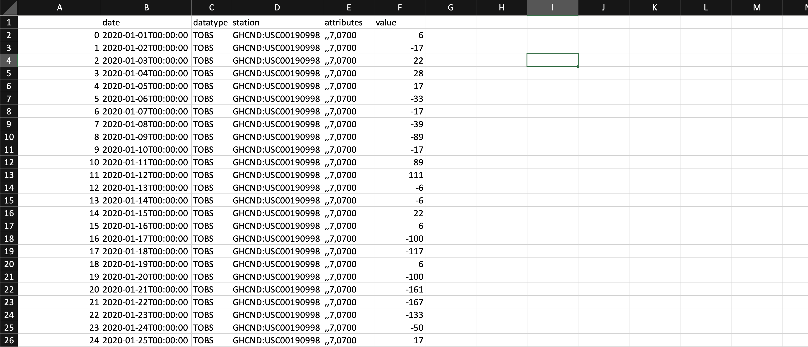
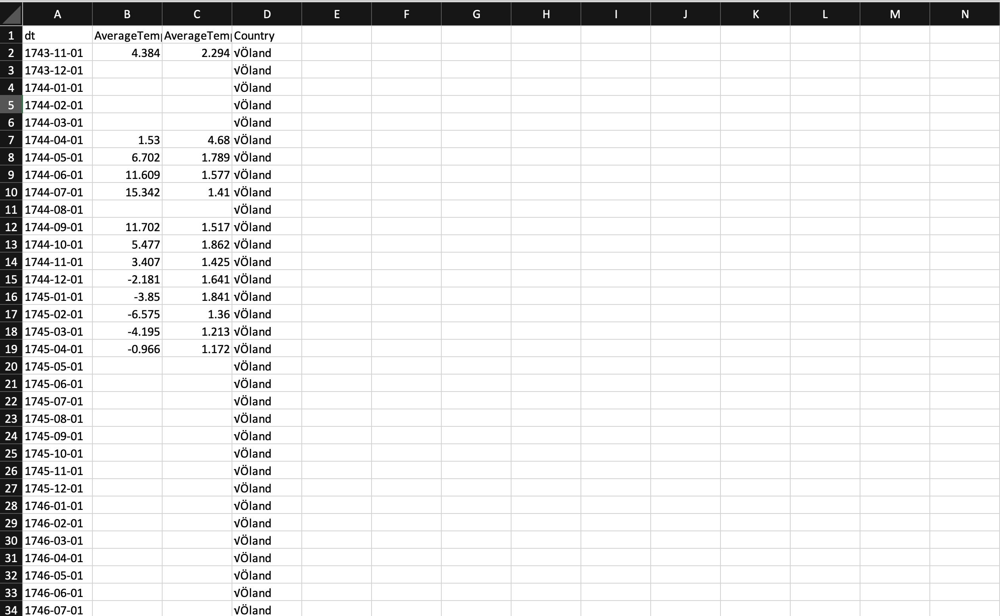
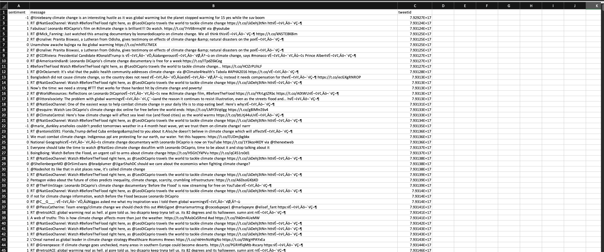
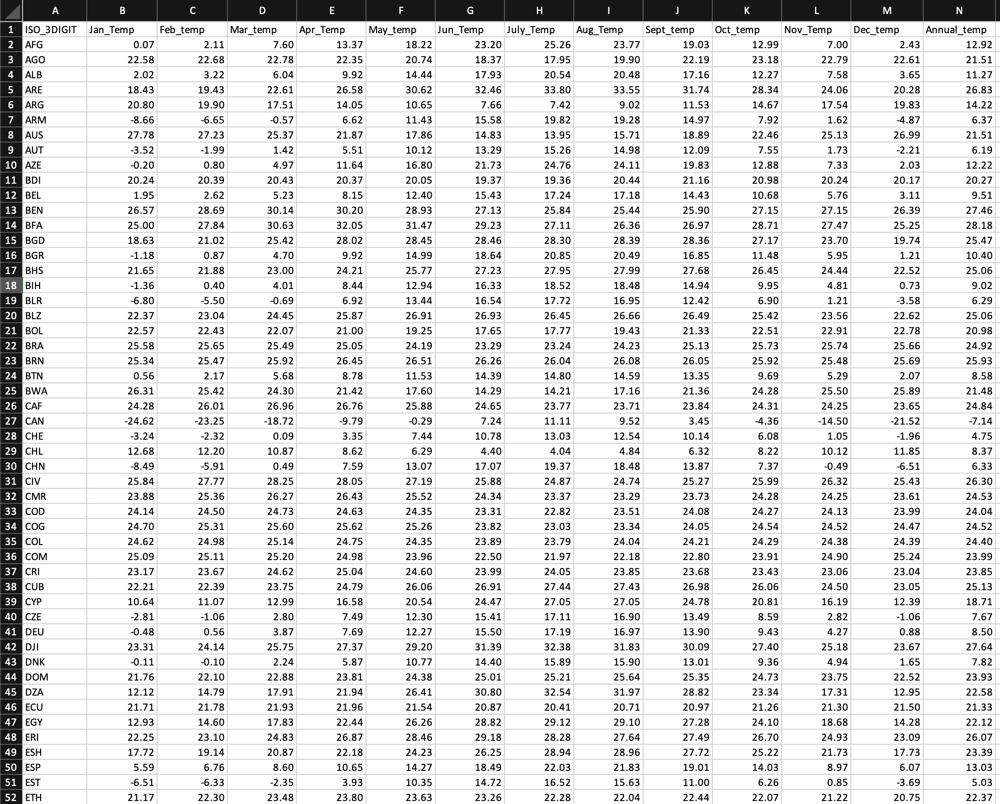

DATA GATHERING.
Where and how?
In the R portion of this project, the data was gathered via two R programs which used APIs to collect data from AirNow.com and NewsAPI.org.
In the Python portion of this project, the data was gathered via a Python program which used an API to collect data from ncdc.noaa.gov (climate data online: web services).
All the APIs used in codes below are the author's.
R - AirNow
The AirNow API was used to gather the air quality index (AQI) of Washington DC (show in the code). AQI essentially refers to how the government uses a index to communicate to the public about how polluted the air is. The aim of this data is to view the trend of how the air quality in different U.S cities have changed. A cool analysis which will be added late to this portfolio, is a visualization on vehicle sales vs. the AQI over a period of time, in a paricular city.
AirNow API - VIEW CODE
Note: The current code only represents gatering data from one city.

This is a screenshot of the sample data collected from the AirNow API.
Download R - AirNow.csv
R - NewsAPI
The NewsAPI was used to gather various qualitative data regarding the keyword 'climate change'.
This data will be useful in parsing through various legislative news, to identify current data about what legislations are being passed about climate change (and their history). The result of this data collection will be used to analyze if its impact is benificial to our society. In other words, we're determining if the necessary steps are being done to save the enviornment.
NewsAPI - VIEW CODENote: There is a limit in the amount of news articles that can be retrieved from the API.

This is a screenshot of the sample data colleceted from the NewsAPI.
Download R - NewsAPI.csv
Python - NOAA API
The NOAA API was used to gather numeric data regarding temperature changes over the past year in a particular city.
The gathered data is the range of temperatures from a particular city over a year. This data is crucial to understanding the degree of effect of climate change in major cities. An intersting analysis would be to compare this data alongside the carbon dioxide values of the same city and correlating their trends. The result of this would serve as key indicators to determine the effects of climate change (and even answer if it exits).
NOAA API - VIEW CODEThe temperature data is shown from Jan 2020 to Dec 2020 to the city code for Buffumville Lake (GHCND:USC00190998). Note: The 'value' column represents the "tenth of the Celcius".
This is a screenshot of the sample data colleceted from the NewsAPI.
Download Python - NOAA.csv
Data found online
There are also alot of interesting corpus of climate change data publicly available on the internet. This project also aims to collect useful data from these open data sets to aid in answering the various questions mentioned in the focus of this project.
Countries.csv
This data showcases the global land temperature by country (actual title GlobalLandTemperaturesByCountry). The dataset spans across over a hundred countries as well as weather points dating back from the 1750's. The temperature data presented here is in Celsius.
The data was gathered from Kaggle.

This is a screenshot of the raw country.csv data.
Download Country.csvTwitter.csv
The raw data shown below showcases various unfiltered Tweets, Tweet ID, and sentiment. There are approximately over 40,000 tweets.
The data was gathered from Kaggle.

This is a screenshot of the raw twitter_sentiment.csv data.
Download Twitter Data.csvCountries_Average.csv
The data was gathered from Kaggle.
The data was gathered by the World Bank. And, the exact subset of the data used was the “Country_TemperatureCRU.” This dataset contains the mean monthly and annual temperatures by country for the period 1961-1999. An advantage of using this dataset is that it's already been cleaned and stripped of any N/A values. An image of it can be seen and downloaded below. Note: all the values are in degrees Celsius.
